Introduction
Apache Spot (incubating) is a solution built to leverage strong technology in both "big data" and scientific computing disciplines. While the solution solves problems end-to-end, components may be leveraged individually or integrated into other solutions. All components can output data in CSV format, maximizing interoperability.
Parallel Ingest Framework.
The system uses decoders optimized from open source, that decodes binary flow and packet data, then loading the data in HDFS and data structures inside Hadoop. The decoded data is stored in multiple formats so it is available for searching, used by machine learning, transfer to law enforcement, or inputs to other systems.
Machine Learning.
The system uses a combination of Apache Spark to run scalable machine learning algorithms. The machine learning component works not only as a filter for separating bad traffic from benign, but also as a way to characterize the unique behavior of network traffic in an organization.
Operational Analytics.
In addition to machine learning, a proven process of context enrichment, noise filtering, whitelisting, and heuristics are applied to network data to produce a short list of the most likely patterns, which may be security threats.
Environment
Pure Hadoop
Apache Spot (incubating) can be installed on a new or existing Hadoop cluster, its components viewed as services and distributed according to common roles in the cluster. One approach is to follow the community validated deployment of CDH (see diagram below).
This approach is recommended for customers with a dedicated cluster for use of the solution or a security data lake; it takes advantage of existing investment in hardware and software. The disadvantage of this approach is that it does require the installation of software on Hadoop nodes not managed by systems like Cloudera Manager.
In the Pure Hadoop deployment scenario, the ingest component runs on an edge node, which is an expected use of this role. It is required to install some non-Hadoop software to make ingest component work. The Operational Analytics runs on a node intended for browser-based management and user applications, so that all user interfaces are located on a node or nodes with the same role. The Machine Learning (ML) component is installed on worker nodes, as the resource management for an ML pipeline is similar for functions inside and outside Hadoop.
Although both of these deployment options are validated and supported, additional scenarios that combine these approaches are certainly
Hybrid Hadoop
On existing Hadoop installations, a different approach involves using additional virtual machines and interacting with Hadoop components (Spark, HDFS) through a gateway node. This approach is recommended for customers with a Hadoop environment hosting heterogeneous use cases, where minimal deviation from node roles is desired. The disadvantage is that virtual machines must be sized properly according to workloads.
In addition to the services deployed on the existing cluster, additional Virtual Machines (VMs) are required to host the non-Hadoop functions of the solution. The gateway service is required for some of these VMs to allow for interaction with Spark, Hive, and HDFS.
Installation
1. CDH (Cloudera Distribution of Hadoop) Requirements:
Minimum required version: 5.4
NOTE: Spot requires spark 1.6, if you are using CDH < 5.7 please upgrade your spark version to 1.6.
Required Hadoop Services before install apache spot (incubating):
- HDFS.
- HIVE.
- IMPALA.
- KAFKA.
- SPARK (YARN).
- YARN.
- Zookeeper.
2. Deployment Recommendations
There are four components in apache spot (incubating):
- spot-setup — scripts that create the required HDFS paths, hive tables and configuration for apache spot (incubating).
- spot-ingest — binary and log files are captured or transferred into the Hadoop cluster, where they are transformed and loaded into solution data stores.
- spot-ml — machine learning algorithms are used to add additional learning information to the ingest data, which is used to filter and sort raw data.
- spot-oa— data output from the machine learning component is augmented with context and heuristics, then is available to the user for interacting with it.
| Component | Node |
|---|---|
| spot-setup | Edge Server (Gateway) |
| spot-ingest | Edge Server (Gateway) |
| spot-ml | YARN Node Manager |
| spot-oa | Node with Cloudera Manager |
3. Configuring the cluster.
3.1 Create a user account for apache spot (incubating).
Before starting the installation,
the recommended approach is to create a user account with super user privileges (sudo)
and with access to HDFS in each one of the nodes where apache spot (incubating) is going to be installed ( i.e. edge server, yarn node).
Add user to all apache spot (incubating) nodes:
sudo adduser <solution-user>
passwd <solution-user>
Add user to HDFS supergroup (IMPORTANT: this should be done in the Name Node) :
sudo usermod -G supergroup $username
3.2 Get the code.
Go to the home directory of the solution user in the node assigned for spot-setup and spot-ingest and clone the code:git clone https://github.com/apache/incubator-spot.git
3.3 Edit apache spot (incubating) configuration.
Go to apache spot (incubating) configuration module to edit the solution configuration:
cd /home/solution_user/incubator-spot/spot-setup
vi spot.conf
Configuration variables of apache spot (incubating):
| Key | Value | Need to be edited |
|---|---|---|
| NODES | A space delimited list of the Data Nodes that will run the C/MPI part of the pipeline. Be very careful to keep * the variable in the format ('host1' 'host2' 'host3' ...). The first node is the same node as the MLNODE. | No (deprecated) |
| UINODE | The node that runs the spot-oa (aka, user interface node). | Yes |
| MLNODE | The node that runs spot-ml, controlling the other nodes. The MLNODE must be the first node in the NODES list | Yes |
| GWNODE | The node that runs the spot-ingest (ingest process) | Yes |
| DBNAME | The name of the database used by the solution (i.e. spotdb) | Yes |
| HUSER | HDFS user path that will be the base path for the solution; this is usually the same user that you created to run the solution (i.e. /user/"solution-user" | Yes |
| DSOURCES | Data sources enabled in this installation | No (deprecated) |
| DFOLDERS | Built-in paths for the directory structure in HDFS | No |
| DNS_PATH | The path to the DNS records in Hive; this will be dynamically built within the pipeline with values for No ${YR}, ${MH} and ${DY} | No |
| PROXY_PATH | The path to the proxy records in Hive; this will be dynamically built within the pipeline with values for ${YR}, ${MH} and ${DY} | No |
| FLOW_PATH | The path to the flow records in Hive; this will be dynamically built within the pipeline with values for ${YR}, ${MH} and ${DY} | No |
| HPATH | Path where output from the ML analysis will be stored | No |
| IMPALA_DEM | Node where the impala demon is running, this value can be gotten from Cloudera Manager -> Impala Yes service -> Instances. | Yes |
| KRB_AUTH | (default: false) Turn Kerberos authentication features on/off | Only if Kerberos is enable |
| KINITPATH | Path to the kinit binary file | Only if Kerberos is enable |
| KINITOPTS | Additional options to the kinit command | Only if Kerberos is enable |
| KEYTABPATH | Keytab file path | Only if Kerberos is enable |
| KRB_USER | Kerberos user | Only if Kerberos is enable |
| LUSER | The local filesystem path for the solution, "/home/solution-user/" | Yes |
| LPATH | The local path for the ML intermediate and final results, dynamically built when the pipeline runs | No |
| RPATH | The path on the Operational Analytics node where the pipeline output will be delivered | No (deprecated) |
| LDAPATH | Path to the directory containing the lda code executable and configuration files. | No (deprecated) |
| LIPATH | Local ingest path | No (deprecated) |
| SPK_EXEC | Number if Spark executors | Yes |
| SPK_EXEC_MEM | Total memory per executor | Yes |
| SPK_DRIVER_MEM | Total driver memory | Yes |
| SPK_DRIVER_MAX_RESULTS | Total memory for driver max results | Yes |
| SPK_EXEC_CORES | Number of cores per executor | Yes |
| SPK_DRIVER_MEM_OVERHEAD | Driver memory overhead | Yes |
| SPRK_EXEC_MEM_OVERHEAD | Executor memory overhead | Yes |
| TOL | Results threshold | No |
NOTE: deprecated keys will be removed in the next releases.
More details about how to set up Spark properties please go to: Spark Configuration
3.4 Run spot-setup.
Copy the configuration file edited in the previous step to "/etc/" folder.
sudo cp spot.conf /etc/.
Copy the configuration to the two nodes named as UINODE and MLNODE.
sudo scp spot.conf solution_user@node:/etc/.
Run the hdfs_setup.sh script to create folders in Hadoop for the different use cases (flow, DNS or Proxy), create the Hive database, and finally execute hive query scripts that creates Hive tables needed to access netflow, DNS and proxy data.
./hdfs_setup.sh
4 Ingest.
4.1 Ingest Code.
Copy the ingest folder (spot-ingest) to the selected node for ingest process (i.e. edge server). If you cloned the code in the edge server and you are planning to use the same server for ingest you dont need to copy the folder.
4.2 Ingest dependencies.
-
Create a src folder to install all the dependencies.
cd spot-ingest
mkdir src
cd src
-
Install pip - python package manager.
wget --no-check-certificate https://bootstrap.pypa.io/get-pip.py
sudo -H python get-pip.py
-
kafka-python (how to install) -- Python client for the Apache Kafka distributed stream processing system.
sudo -H pip install kafka-python
-
watchdog - (how to install) Python API library and shell utilities to monitor file system events.
sudo -H pip install watchdog
-
spot-nfdump - netflow dissector tool. This version is a custom version developed for apache spot (incubating) that has special features required for spot-ml.
sudo yum -y groupinstall "Development Tools"
git clone https://github.com/Open-Network-Insight/spot-nfdump.git
cd spot-nfdump
./install_nfdump.sh
cd ..
-
tshark - DNS dissector tool. For tshark, follow the steps on the web site to install it. Tshark must be downloaded and built from Wireshark page
Full instructions for compiling Wireshark can be found here instructions for compiling
sudo yum -y install gtk2-devel gtk+-devel bison qt-devel qt5-qtbase-devel sudo yum -y groupinstall "Development Tools"
sudo yum -y install libpcap-devel
#compile Wireshark
wget https://1.na.dl.wireshark.org/src/wireshark-2.2.3.tar.bz2 tar xvf wireshark-2.0.1.tar.bz2
cd wireshark-2.0.1
./configure --with-gtk2 --disable-wireshark
make
sudo make install
cd ..
-
screen -- The screen utility is used to capture output from the ingest component for logging, troubleshooting, etc. You can check if screen is installed on the node.
which screen
If screen is not available, install it.
sudo yum install screen
-
Spark-Streaming – Download the following jar file: spark-streaming-kafka-0-8-assembly_2.11. This jar adds support for Spark Streaming + Kafka and needs to be downloaded on the following path: spot-ingest/common (with the same name). Currently spark streaming is only enabled for proxy pipeline, if you are not planning to ingest proxy data you can skip this step.
cd spot-ingest/common
wget https://repo1.maven.org/maven2/org/apache/spark/spark-streaming-kafka- 0-8-assembly_2.11/2.0.0/spark-streaming-kafka-0-8-assembly_2.11-2.0.0.jar
4.3 Ingest configuration.
Ingest Configuration:
The file ingest_conf.json contains all the required configuration to start the ingest module
- dbname: Name of HIVE database where all the ingested data will be stored in avro-parquet format.
- hdfs_app_path: Application path in HDFS where the pipelines will be stored (i.e /user/application_user/).
- kafka: Kafka and Zookeeper server information required to create/listen topics and partitions.
- collector_processes: Ingest framework uses multiprocessing to collect files (different from workers), this configuration key defines the numbers of collector processes to use.
- spark-streaming: Proxy pipeline uses spark streaming to ingest data, this configuration is required to setup the spark application for more details please check : how to configure spark
- pipelines: In this section you can add multiple configurations for either the same pipeline or different pipelines. The configuration name must be lowercase without spaces (i.e. flow_internals).
- local_staging: (for each pipeline) this path is very important, ingest uses this for tmp files
For more information about spot ingest please go to spot-ingest
5. Machine Learning.
5.1 ML code.
Copy ML code to the primary ML node, the node will launch Spark application.
scp -r spot-ml "ml-node":/home/"solution-user"/. ssh "ml-node" mv spot-ml ml cd /home/"solution-user"/ml
5.1 ML dependencies
-
Create a src folder to install all the dependencies.
mkdir src
cd src Install sbt -- In order to build Scala code, a SBT installation is required. Please download and install download.
-
Build Spark application.
cd ml
sbt assembly
NOTE: validate spot.conf is already copied to this node in the following path: /etc/spot.conf
6. Operational Analytics.
6.1 OA code.
Copy spot-oa code to the OA node designed in the configuration file (UINODE).
scp -r spot-oa "ml-node":/home/"solution-user"/.
ssh "oa-node"
cd /home/"solution-user"/spot-oa
6.2 OA prerequisites.
In order to execute this process there are a few prerequisites:
- Python 2.7.
- spot-ml results. Operational Analytics works and transforms Machine Learning results. The implementation of Machine Learning in this project is through spot-ml. Although the Operational Analytics is prepared to read csv files and there is not a direct dependency between spot-oa and spot-ml, it's highly recommended to have these two pieces set up together. If users want to implement their own machine learning piece to detect suspicious connections they need to refer to each data type module to know more about input format and schema.
- TLD 0.7.6
6.3 OA (backend) installation.
OA installation consists of the configuration of extra modules or components and creation of a set of files. Depending on the data type that is going to be processed some components are required and other components are not. If users are planning to analyze the three data types supported (Flow, DNS and Proxy) then all components should be configured.
Add context files. Context files should go into spot-oa/context folder and they should contain network and geo localization context. For more information on context files go to spot- oa/context/ README.md
-
Add a file ipranges.csv: Ip ranges file is used by OA when running data type Flow. It should contain a list of ip ranges and the label for the given range, example:
10.0.0.1,10.255.255.255,Internal
-
Add a file iploc.csv: Ip localization file used by OA when running data type Flow. Create a csv file with ip ranges in integer format and give the coordinates for each range.
-
Add a file networkcontext_1.csv: Ip names file is used by OA when running data type DNS and Proxy. This file should contains two columns, one for Ip the other for the name, example:
10.192.180.150, AnyMachine
10.192.1.1, MySystem -
The spot-setup project contains scripts to install the hive database and also includes the main configuration file for this tool. The main file is called spot.conf which contains different variables that the user can set up to customize their installation. Some variables must be updated in order to have spot-ml and spot-oa working.
To run the OA process it's required to install spot-setup. If it's already installed just make sure the following configuration are set up in spot.conf file (oa node).
- LUSER: represents the home folder for the user in the Machine Learning node. It's used to know where to return feedback.
- HUSER: represents the HDFS folder. It's used to know from where to get Machine Learning results.
- IMPALA_DEM: represents the node running Impala daemon. It's needed to execute Impala queries in the OA process.
- DBNAME: Hive database, the name is required for OA to execute queries against this database. LPATH: represents the local path where the feedback is going to be sent, it actually works with LUSER.
-
Configure components. Components are python modules included in this project that add context and details to the data being analyzed. There are five components and while not all components are required to every data type, it's recommended to configure all of them in case new data types are analyzed in the future. For more details about how to configure each component go to spot-oa/oa/components/README.md.
-
You need to update the engine.json file accordingly:
{ "oa_data_engine":"
", "impala":{ "impala_daemon":" " }, "hive":{} } Where:
- "oa_data_engine": Whichever database engine you have installed and configured in your cluster to work with Apache Spot (incubating). i.e. "Impala" or "Hive". For this key, the value you enter needs to match exactly with one of the following keys, where you'll need to add the corresponding node name.
- "impala_daemon": The node name in your cluster where you have the database service running.
- "oa_data_engine": Whichever database engine you have installed and configured in your cluster to work with Apache Spot (incubating). i.e. "Impala" or "Hive". For this key, the value you enter needs to match exactly with one of the following keys, where you'll need to add the corresponding node name.
For more information please go to: https://github.com/apache/incubator-spot/blob/master/spot-oa/oa/INSTALL.md
6.4 Visualization.
Apache Spot (incubating) - User Interface (aka Spot UI or UI) Provides tools for interactive visualization, noise filters, white listing, and attack heuristics.
Here you will find instructions to get Spot UI up and running. For more information about Spot look here.
6.5 Visualization requirements.
- IPython with notebook module enabled (== 3.2.0) link
- NPM - Node Package Manager link
- spot-oa output > Spot UI takes any output from spot-oa backend, as input for the visualization tools provided. Please make sure there are files available under PATH_TO_SPOT/ui/data/${PIPELINE}/${DATE}/
6.6 Install visualization.
-
Go to Spot UI folder:
cd spot-oa/ui
-
With root privileges, install browserify and uglify as global commands on your system.
npm install –g browserify uglifyjs
-
Install dependencies and build Spot UI.
npm install
User Guide
Flow
Suspicious Connects
Access the analyst view for Suspicious Connects http://"server-ip":8889/files/ui/flow/suspicious.html. Select the date that you want to review (defaults to current date).
Your view should look similar to the one below:
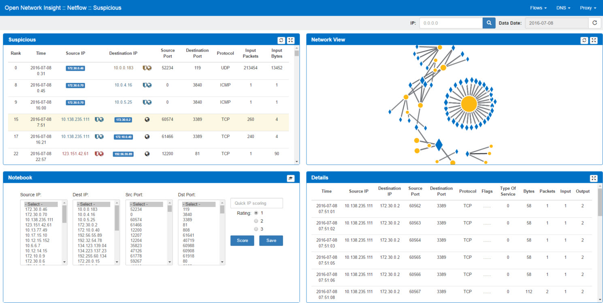Suspicious Connects Web Page contains 4 frames with different functions and information:
- Suspicious
- Network View
- Notebook
- Details
The Suspicious frame
Located in the top left corner of the Suspicious Connects Web Page, this frame presents the Top 250 Suspicious Connections in a table format based on Machine Learning (ML) output. These are the columns depicted in this table:
- Rank - ML output rank
- Time - Time received field for Netflow record
- Source IP - Netflow Record Source IP Address
- Destination IP - Netflow Record Destination IP Address
- Source Port - Netflow Record TCP/UDP Source Port Number
- Destination Port - Netflow Record TCP/UDP Destination Port Number
- Protocol - Text format for Protocol contained within Netflow Record (Ex. TCP/UDP)
- Input Packets - Reported Input Packets for the Netflow Record
- Input Bytes - Reported Input Bytes for the Netflow Record
Additional functionality in Suspicious frame
-
By selecting a specific row within the Suspicious frame, the connection in the Network View will be highlighted.
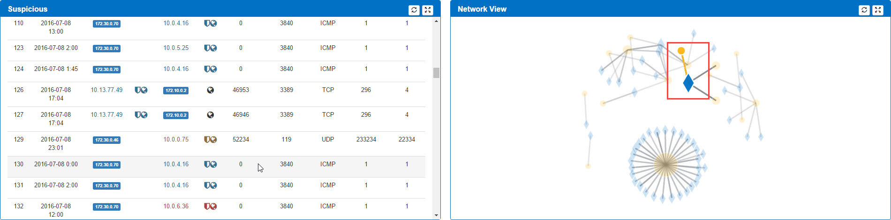 -
In addition, by performing this row selection the Details Frame presents all the Netflow records in between Source & Destination IP Addresses that happened in the same minute as the Suspicious Record selected
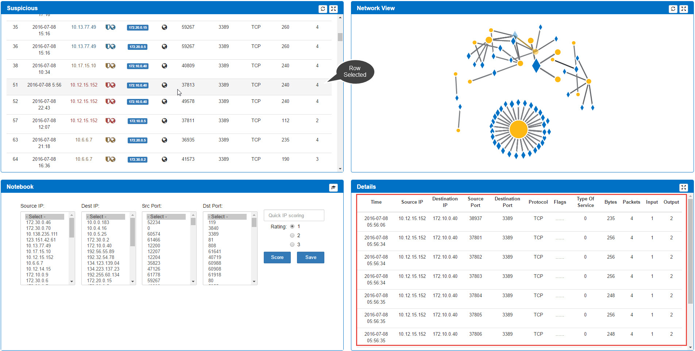 -
Next to a Source/Destination IP Addresses, a shield icon might be present. This icon denotes any reputation services value context added as part of the Operational Analytics component. By rolling over you can see the IP Address Reputation result
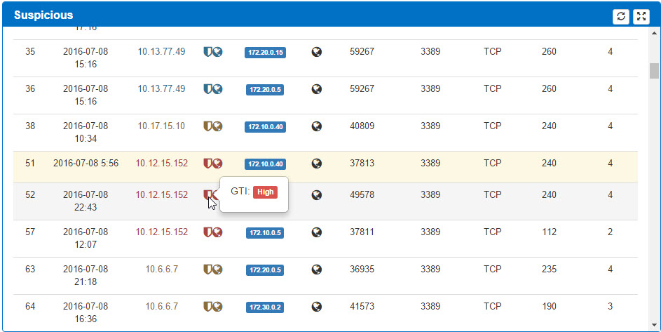 -
An additional icon next to the IP addresses within the Suspicious frame is the globe icon. This icon denotes Geo-localization information context added as part of the Operational Analytics component. By rolling over you can see the additional information
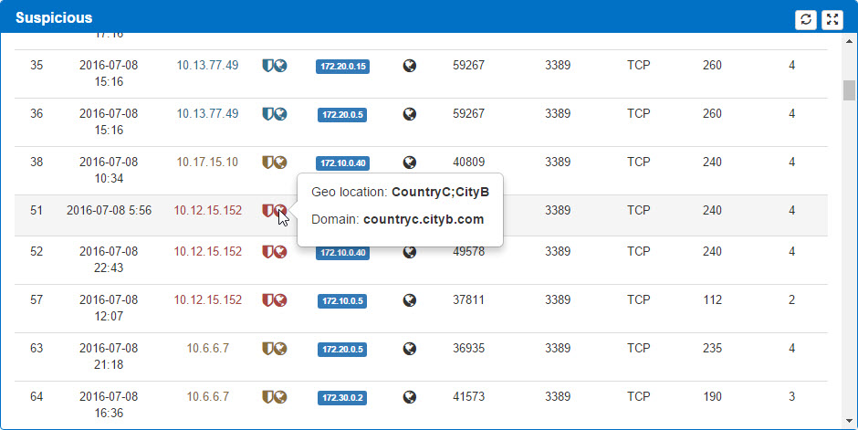
The Network View frame
Located at the top right corner of the Suspicious Connects Web Page. It is a graphical representation of the Suspicious records relationships.
If context has been added, Internal IP Addresses will be presented as diamonds and External IP Addresses as circles.
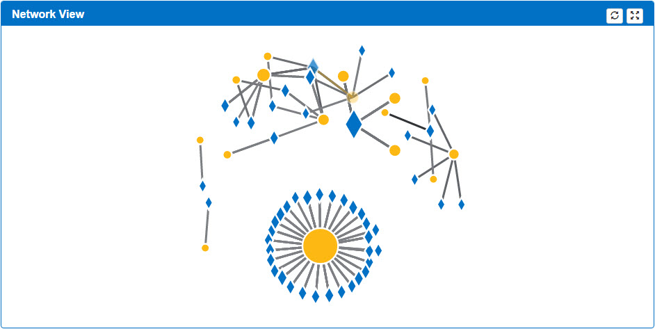Additional functionality in Network View frame
-
As soon as you move your mouse over a node, a dialog shows IP address information of that particular node.
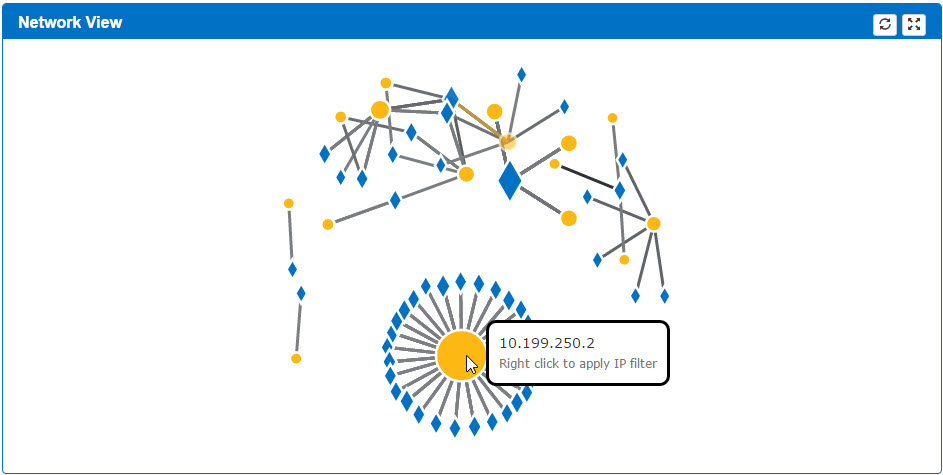 -
A primary mouse click over one of the nodes will bring a chord diagram into the Details frame.
The chord diagram is a graphical representation of the connections between the selected node and other nodes within Suspicious Connects records, providing number of Bytes From & To. You can move your mouse over an IP to get additional information. In addition, drag the chord graph to change its orientation.
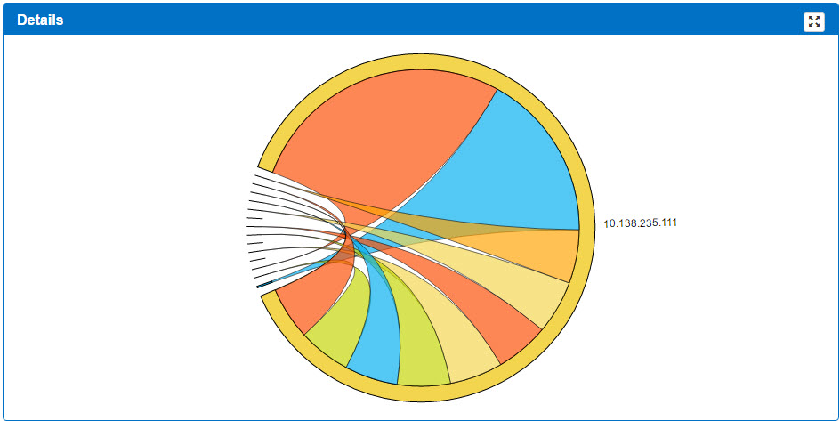 -
A secondary mouse click uses the node information in order to apply an IP filter to the Suspicious Web Page.
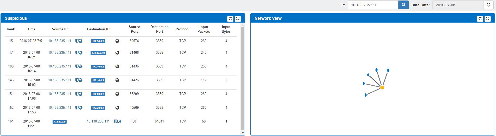
The Notebook frame
This frame contains an initialized IPython Notebook. The main function is to allow the Analyst to score IP Addresses and Ports with different values. In order to assign a risk to a specific connection, select it using a combination of all the combo boxes, select the correct risk rating (1=High risk, 2 = Medium/Potential risk, 3 = Low/Accepted risk) and click Score button. Selecting a value from each list will narrow down the coincidences, therefore if the analyst wishes to score all connections with one same relevant attribute (i.e. src port 80), then select only the combo boxes that are relevant and leave the rest at the first row at the top.
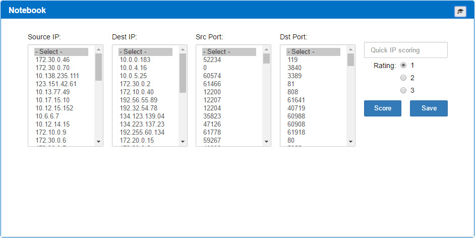The Score button
When the Analyst clicks on the Score button, the action will find all coincidences exactly matching the selected values and update their score to the rating selected in the radio button list.
The Save button
Analysts must use Save button in order to store the scored connections. After you click it, the rest of the frames in the page will be refreshed and the connections that you already scored will disappear on the suspicious connects page, including from the lists in the notebook. This will also reorder the flow_scores.csv file to move all scored connections to the end of the file and sort the rest by severity value. A shell script will be executed to copy the file with the scored connections to the ML Node and specific path. The following values will be obtained from the .conf file:
- LPATH
- MLNODE
- LUSER
For this process to work correctly, it's important to create an ssh key to enable secure communication between nodes, in this case, the ML node and the node where the UI runs. To learn more on how to create and copy the ssh key, please refer to the "Configure User Accounts" section.
The Quick IP Scoring box
This box allows the Analyst to enter an IP Address and scored using the "Score" and "Save" buttons using the same process depicted above.
Suspicious Connects Web Page Input files
- flow_scores.csv
- flow_scores_bu.csv
Threat Investigation
Access the analyst view for suspicious connects http://"server-ip":8889/files/ui/flow/suspicious.html.
Select the date that you want to review.
Your screen should now look like this:
The analyst must score the suspicious connections before moving into Threat Investigation View, please refer to Suspicious Connects Analyst View walk-through.
Select Flows > Threat Investigation from apache spot (incubating) Menu.
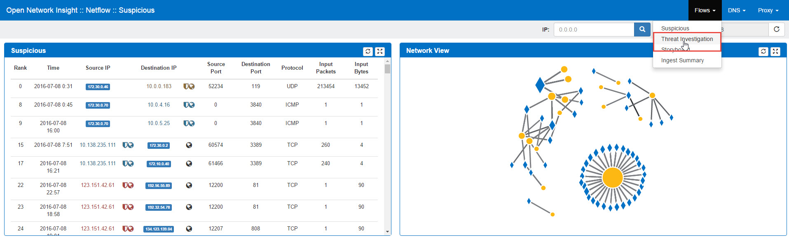Threat Investigation Web Page will be opened, loading the embedded IPython notebook.
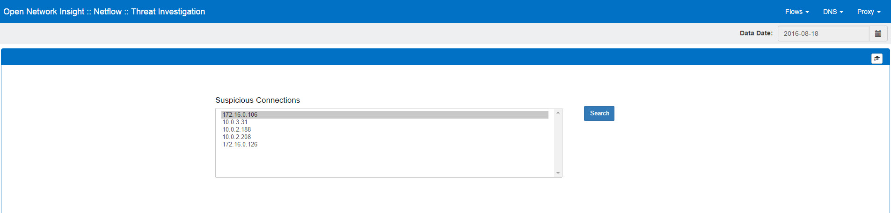Expanded search
You can select any IP from the list and click Search to view specific details about it. A query to the flow table will be executed looking into the raw data initially collected to find all communication between this and any other IP Addresses during the day, collecting additional information, such as:
- max & avg number of bytes sent/received
- max & avg number of packets sent/received
- destination port
- source port
- first & last connection time
- count of connections
The full output of this query is stored into the ir-
Based on the results in this file, the following functions will be executed:
- get_in_out_and_twoway_conns
- add_geospatial_info()
- add_network_context()
The system will create three dictionaries, each containing:
- Inbound connections (when the suspicious IP acts only as destination)
- Outbound connections (when the suspicious IP acts only as source)
- 2Way Connections (when the suspicious IP acts as both source and destination)
If an iploc.csv file is available, each dictionary will be updated with the geolocation data for each IP.
If a network_context_1.txt file is available, a description for each identified node will also be added to each dictionary.
The connections dictionary will be separated into two smaller dictionaries, each containing
- Top 'n' IP's per number of connections.
- Top 'n' IP's per bytes transferred.
- The number of results stored in the dictionaries (n) can be set by updating the value of the top_results variable.
Save Comments
In addition, a web form is displayed under the title of 'Threat summary', where the analyst can enter a Title & Description on the kind of attack/behavior described by the particular IP address that is under investigation.
Click on the Save button after entering the data to write it into a CSV file, which eventually will be used in the Storyboard Analyst View.
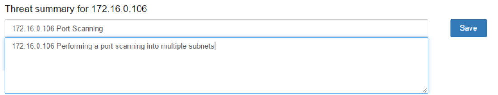After creating the csv file with the analysis description, the following functions will generate all graphs and diagrams related to the IP under investigation, to populate the Storyboard Analyst view.
- generate_attack_map_file(anchor_ip, top_inbound_b, outbound, twoway)
- generate_stats(anchor_ip, top_inbound_b, outbound, twoway, threat_name)
- generate_dendro(anchor_ip, top_inbound_b, outbound, twoway, date)
- details_inbound(anchor_ip,top_inbound_b)
generate_attack_map_file() - create a globe map indicating the trajectory of the connections based on their geolocation. This function depends on having geolocation data for each IP. If you haven't set up a geolocation database file, the map file won't be generated.
Output: globe_
generate_stats() - This will create the horizontal bar graph for the Impact Analysis.This will represent the number of inbound, outbound and twoway connections found.
Output: stats-
generate_dendro() - This function creates a file linking all different IP's that have connected to the IP under investigation, this will be displayed in the Storyboard under the Incident Progression panel as a dendrogram. If no network context file is included, the dendrogram will only be 1 level deep, but if a network context file is included, additional levels will be added to the dendrogram to break down the threat activity.
Output: dendro-
details_inbound() - This function executes a query to the flow table, to find additional details on the IP under investigation and its connections grouping them by time; so the result will be a graph showing the number of connections occurring in a customizable timeframe.
Output: sbdet-
add_threat() - This function updates/creates the threats.csv file, appending a new line for every threat analyzed. This file will serve as an index for the Storyboard and is displayed in the 'Executive Threat Briefing' panel.
Output: threats.csv
Each function will print a message to let you know if its output file was successfully updated.
Continue to the Storyboard
Once you have saved comments on any suspicious IP, you can continue to the Storyboard to check the results.
Input files
- flow_scores.csv
- iploc.csv
- network_context_1.txt
Output files
- /oni-oa/data/flow/
/threats.csv - /oni-oa/data/flow/
/threat_ .csv - /oni-oa/data/flow/
/sbdet- .tsv - /oni-oa/data/flow/
/globe_ .json - /oni-oa/data/flow/
/stats- .json - /oni-oa/data/flow/
/dendro- .json
HDFS tables consumed:
- flow
Storyboard
-
Select the option Flow > Storyboard from Apache Spot (incubating) Menu.
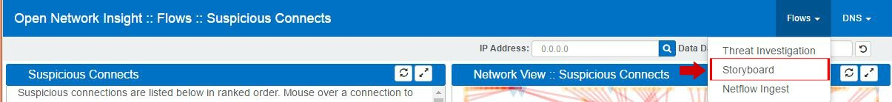 -
Your view should look something like this, depending on the IP's you have analyzed on the Threat Analysis for that day. You can select a different date from the calendar.
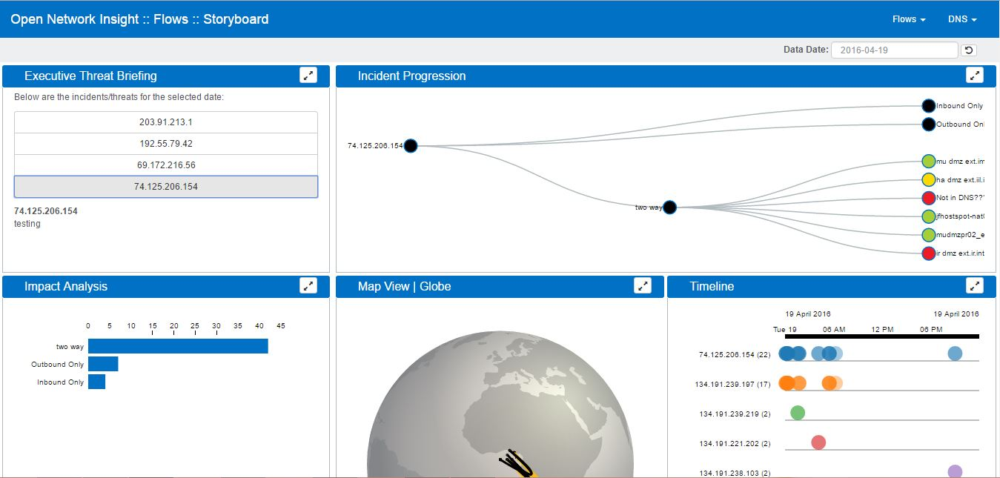 -
Review the results:
Executive Threat Briefing
Data source file: threats.csv Executive Threat Briefing lists all the incident titles you entered at the Threat Investigation notebook. You can click on any title and the additional information will be displayed.
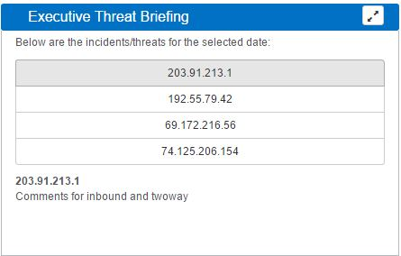
Clicking on a threat from the list will also update the additional frames.
Incident Progression
Data source file: dendro-
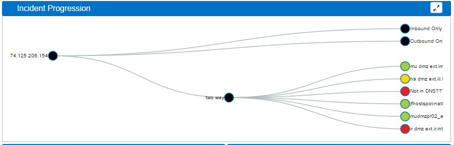.json
Frame located in the top right of the Storyboard Web pageIncident Progression displays a tree graph (dendrogram) detailing the type of connections that conform the activity related to the threat.
When network context is available, this graph will present an extra level to break down each type of connection into detailed context.
Impact Analysis Data source file: stats-
.json 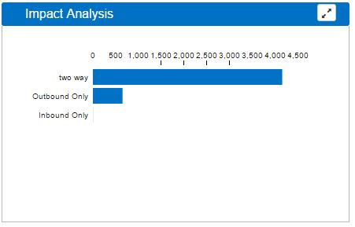
Impact Analysis displays a horizontal bar graph representing the number of inbound, outbound and two-way connections found related to the threat. Clicking any bar in the graph, will break down that information into its context.
Map View | Globe
Data source file: globe_
.json 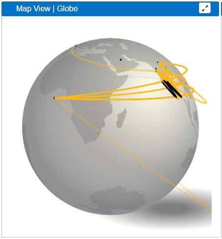
Map View Globe will only be created if you have a geolocation database. This is intended to represent on a global scale the communication detected, using the geolocation data of each IP to print lines on the map showing the flow of the data.
Timeline
Data source file: sbdet-
.json 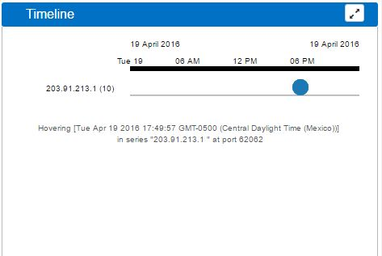
Timeline is created using the resulting connections found during the Threat Investigation process. It will display 'clusters' of inbound connections to the IP, grouped by time; showing an overall idea of the times during the day with the most activity. You can zoom in or out into the graphs timeline using your mouse scroll.
Input files
- threats.csv
- threat-dendro-${id}.json
- stats-${id}.json
- globe-${id}.json
- sbdet-${id}.tsv
Ingest Summary
-
Load the Ingest Summary page by going to http://"server-ip":8889/files/index_ingest.html or using the drop down menu.
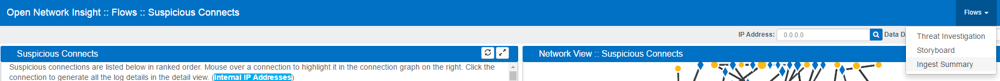 -
Select a start date, end date and click the reload button to load ingest data. Ingest summary will default to last 7 seven days. Your view should now look like this:
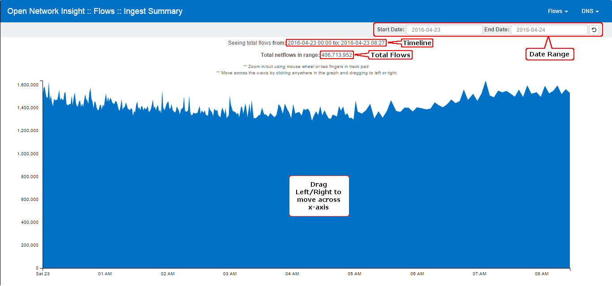 -
Ingest Summary presents the Flows ingestion timeline, showing the total flows for a particular period of time.
- Analyst can zoom in/out on the graph.
- Analyst can zoom in/out on the graph.
DNS
Suspicious DNS
-
Open the analyst view for Suspicious DNS: http://"server-ip":8889/files/ui/dns/suspicious.html. Select the date that you want to review (defaults to current date).
Your screen should now look like this:
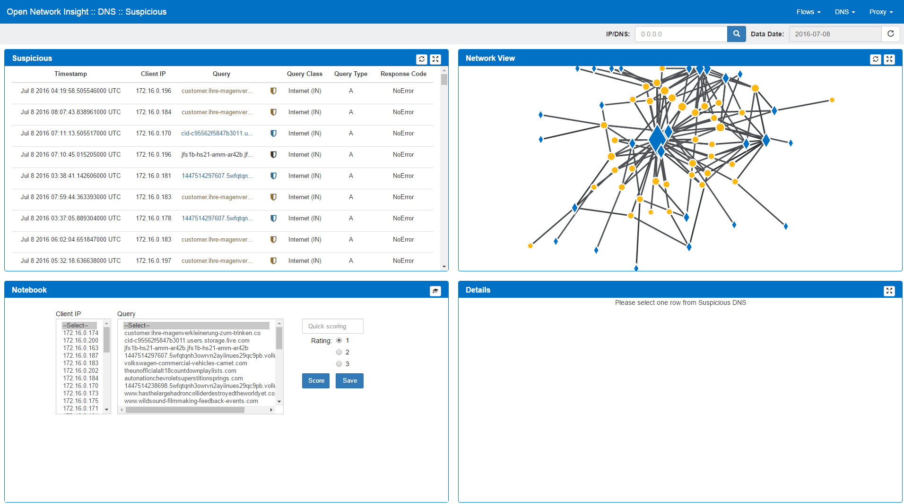 -
The Suspicious
Located at the top left of the Web page, this frame shows the top 250 suspicious DNS from the Machine Learning (ML) output.- By moving the mouse over a suspicious DNS,
you will highlight the entire row as well as a blur effect that allows you to quickly identify current connection within the Network View frame.
-
Shield icon. Represents the output for any Reputation Services results that has been enabled, user can mouse over in order to obtain additional information.
The icon will change its color depending upon the results from specific reputation services.
-
By selecting on a Suspicious DNS record, you will highlight current row as well as the node from Network View frame.
In addition Details frame will be populated with additional communications directed to the same DNS record.
- By moving the mouse over a suspicious DNS,
you will highlight the entire row as well as a blur effect that allows you to quickly identify current connection within the Network View frame.
-
The Network View frame
Located at the top right corner, Network View is a graphic representation of the "Suspicious DNS".- As soon as you move your mouse over a node, a dialog shows up providing additional information.
- Diamonds represents DNS records and circles represents IP addresses communicating to the respective DNS record
- A primary mouse click in an IP Address (circle) will bring a diagram within Details frame, providing all the Domain Name records queried by that particular IP Address
- A secondary mouse click uses the node information to filter suspicious data.
- As soon as you move your mouse over a node, a dialog shows up providing additional information.
-
The Details frame
Located at the bottom right corner of the Web page. It provides additional information for the selected connection.Detail View frame has two modes:
- Table details (when you select a record in the Suspicious frame).
- Dendrogram diagram (when you select an IP address in the Network View frame)
-
The Notebook frame
This frame contains an initialized IPython Notebook. The main function is to allow the Analyst to score IP Addresses and DNS records with different values. In order to assign a risk to a specific connection, select it using a combination of all the combo boxes, select the correct risk rating (1=High risk, 2 = Medium/Potential risk, 3 = Low/Accepted risk) and click Score button. Selecting a value from each list will narrow down the coincidences, therefore if the analyst wishes to score all connections with one same relevant attribute (i.e. ip address 10.1.1.1), then select only the combo boxes that are relevant and leave the rest at the first row at the top.Score button
Pressing the 'Score' button will find all exact matches of the selected threat (Client IP or Query) in the dns_scores.csv file and update them with the selected rating value. These results are temporarily stored in the score_tmp.csv file and copied back to the dns_scores.csv file at the end of the process.
Selecting values from both the "Client IP" and "Query" lists to score them together, will update every matching threat individually with the same rating value, but not necessarily as a Client_IP-Query pair.
You can score a large set of similar or coincident queries by entering a keyword in the "Quick Scoring" text field and then select a severity value from the radiobutton list. The value entered here will only search for matches on the dns_qry_name name column. "Quick Scoring" text field has precedence over any selection made on the lists.
The Save button
Analysts must use the Save button in order to store the scored records. After you click it, the rest of the frames in the page will be refreshed and the connections that you already scored will disappear on the suspicious connects page. A shell script will be executed to copy the file with the scored connections to the ML Node and specific path. The following values will be obtained from the .conf file:
- LPATH
- MLNODE
- LUSER
Input files
- dns_scores.csv
- dns_scores_bu.csv
DNS Threat Investigation
Access the analyst view for DNS Suspicious Connects. Select the date that you want to review.
Your view should now look like this:
The analyst must previously score the suspicious connections before moving into Threat Investigation View, please refer to DNS Suspicious Connects Analyst View walk-through.
Select DNS > Threat Investigation from Apache Spot (incubating) Menu.
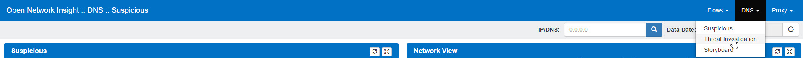Threat Investigation Web Page will be opened, loading the embedded IPython notebook. A list with all IPs and DNS Names scored as High risk will be presented
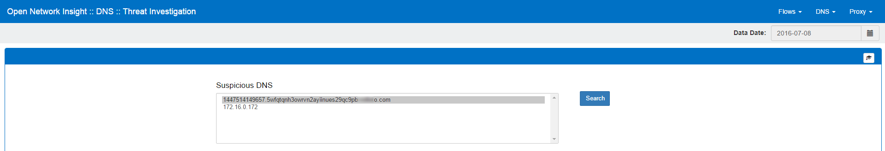Expanded Search
Select any value from the list and press the "Search" button. The system will execute a query to the dns table, looking into the raw data initially collected to find additional activity of the selected IP or DNS Name according to the following criteria:
Expanded Search for a particular Domain Name
The query results will provide the different unique IP Addresses list that have queried this particular Domain, the list will be sorted by the quantity of connections.
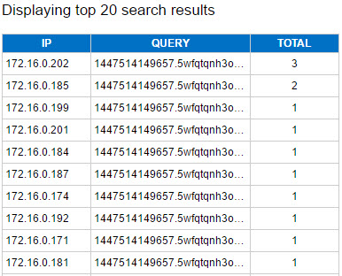
Expanded Search for a particular IP
The expanded search will provide the different unique Domains list that this particular IP queried in one day, they will be sorted by the quantity of connections made to each specific Domain Name.
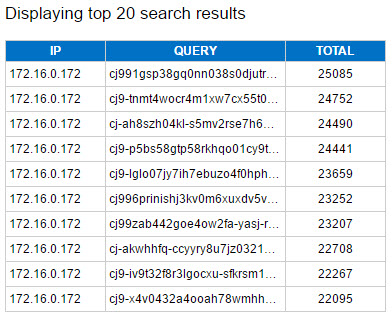
The full output of this query is stored into the threat-dendro-
Save comments.
In addition, a web form is displayed under the title of 'Threat summary', where the analyst can enter a Title & Description on the kind of attack/behavior described by the particular IP address that is under investigation.
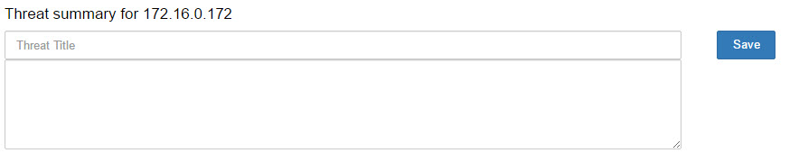Clicking the "Save" button, will create/update the threats.csv file, adding a new line with the contents of the form. This file is used at the Storyboard section to display all the comments entered by the user, as well it will serve as a index of the threats analyzed.
Continue to the Storyboard.
Once you have saved comments on any suspicious IP or domain, you can continue to the Storyboard to check the results.
Input files
- ipython/dns/user/
/dns_scores.css
Output files
- ipython/dns/user/
/threats.csv - ipython/dns/user/
/threat-dendro- .csv
HDFS tables consumed:
dns
DNS Storyboard
Walk-through
-
Select the option DNS > Storyboard from Apache Spot (incubating) Menu.

-
Your view should look something like this, pending on how many threats you have analyzed and commented on the Threat Analysis for that day. You can select a different date from the calendar.
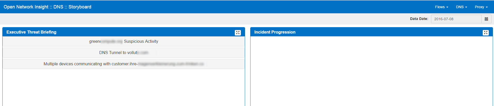
Executive Threat Briefing
Data source file: threats.csv
Executive Threat Briefing frame lists all the incident titles you entered at the Threat Investigation notebook. You can click on any title and view the additional comments at the bottom area of the panel.
Incident progression Data source file: threat-dendro-
Incident progression frame is located on the right side of the Web page.
This will display a tree graph (dendrogram) detailing the type of connections that conform the activity related to the threat.
Input files
- threats.csv
- threat-dendro-
.csv
Proxy
Suspicious Proxy
Walk-through-
Open the analyst view for Suspicious Proxy: http://"server-ip":8889/files/ui/proxy/suspicious.html. Select the date that you want to review (defaults to current date).
Your screen should now look like this:
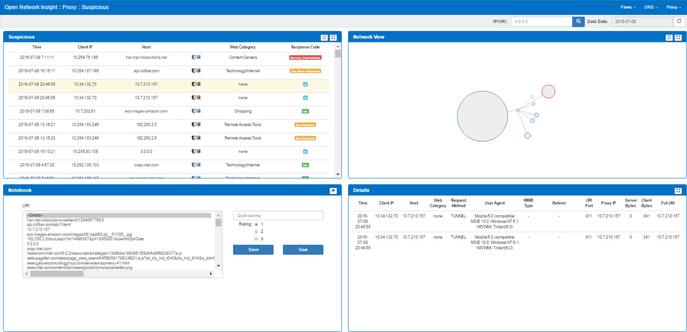
-
The Suspicious frame
Located at the top left of the Web page, this frame shows the top 250 Suspicious Proxy connections from the Machine Learning (ML) output.-
By moving the mouse over a suspicious Proxy record,
you will highlight the entire row as well as a blur effect that allows you to quickly identify current connection within the Network View frame.
-
The Shield icon. Represents the output for any Reputation Services results that has been enabled, user can mouse over in order to obtain additional information.
The icon will change its color depending upon the results from the Reputation Service.
-
The List icon. When the user mouse over this icon, it presents the Web Categories provided by the Reputation Service
-
By selecting on a Suspicious Proxy record, you will highlight current row as well as the node from Network View frame. In addition,
Details frame will be populated with additional communications directed to the same Proxy record.
-
By moving the mouse over a suspicious Proxy record,
you will highlight the entire row as well as a blur effect that allows you to quickly identify current connection within the Network View frame.
-
The Network View frame
Located at the top right corner, Network View is a hierarchical force graph used to represent the "Suspicious Proxy" connections.Network View Force Graph Order Hierarchy
- Root Proxy Node
- Proxy Request Method
- Proxy Host
- Proxy Path
- Client IP Address
Network View Functionality
-
As soon as you move your mouse over a node, a dialog shows up providing additional information.
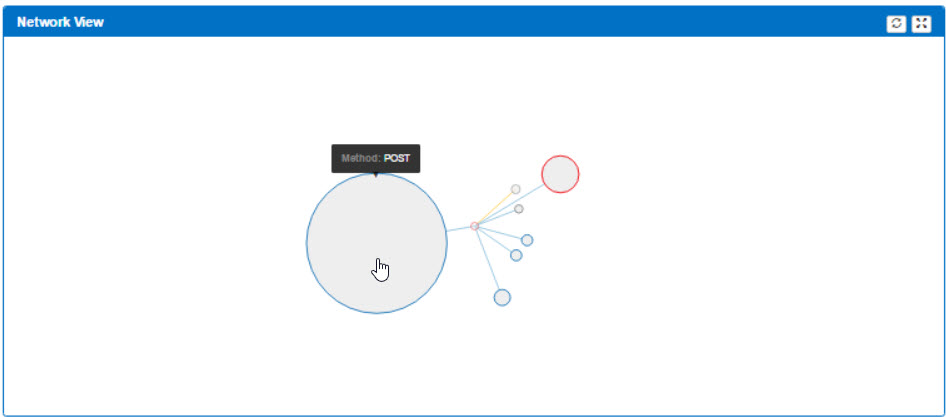 -
Graph can be zoomed in/out and can be moved in the frame
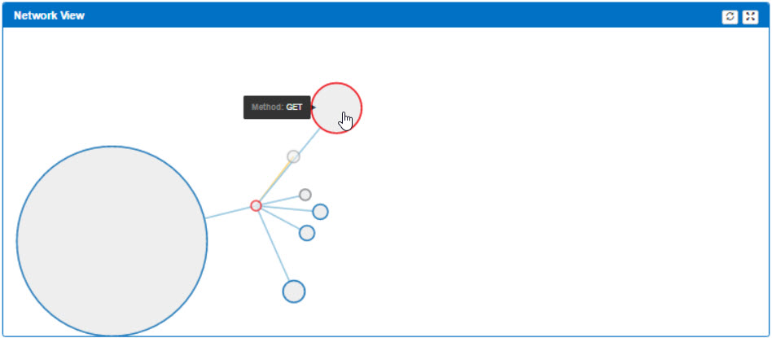 -
By double-clicking in the Root Proxy Node the graph can be fully expanded/collapsed
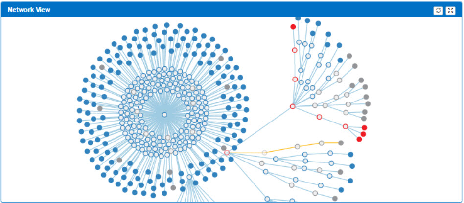 -
By double-clicking a node, the node can be expanded/collapsed one level
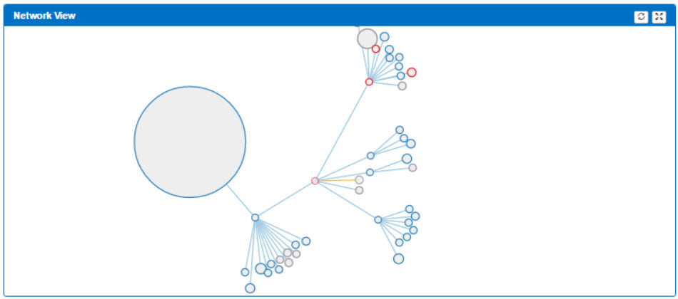 -
The path in yellow represents the Suspicious record selected in the suspicious frame
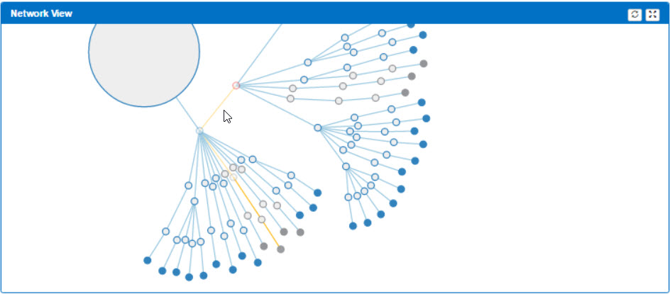 -
Records will be highlighted with different colors depending upon the Risk Reputation provided by the Reputation Service
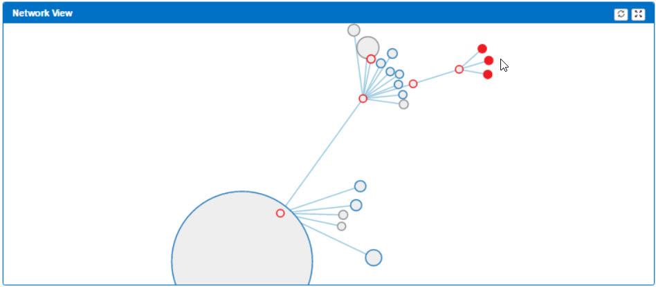 -
A secondary mouse click over the Proxy Path or Client IP address nodes populates the Filter Box which eventually filter Suspicious & Network View Frames
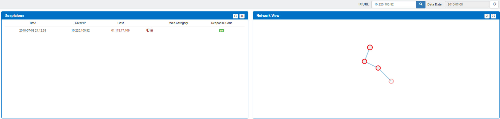
-
The Details frame
Located at the bottom right corner of the Web page. It provides additional information for the selected connection in the Suspicious frame. It includes columns that are not part of the Suspicious frame such as User Agent, MIME Type, Proxy Server IP, Bytes.
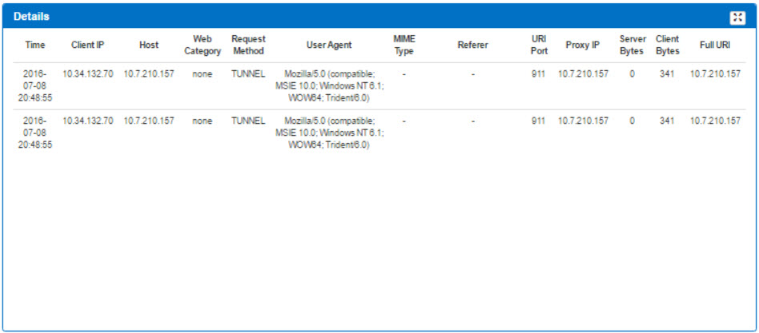 -
The Notebook frame
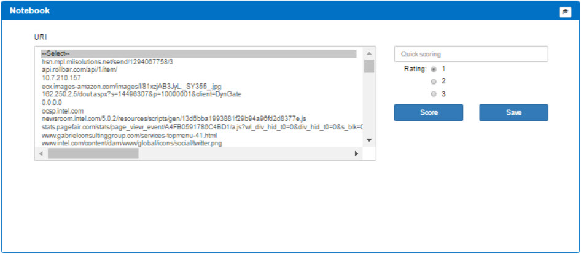
This frame contains an initialized IPython Notebook. The main function is to allow the Analyst to score Proxy records with different values. In order to assign a risk to a specific connection, select the correct rating (1=High risk, 2 = Medium/Potential risk, 3 = Low/Accepted risk) and click Score button.
The Score button
Pressing the 'Score' button will find all exact matches of the selected threat (Proxy Record) in the proxy_scores.csv file and update them with the selected rating value. These results are temporarily stored in the score_tmp.csv file and copied back to the proxy_scores.csv file at the end of the process.
The Save button
Analysts must use the Save button in order to store the scored records. After you click it, the rest of the frames in the page will be refreshed and the connections that you already scored will disappear on the suspicious connects page. A shell script will be executed to copy the file with the scored connections to the ML Node and specific path. The following values will be obtained from the .conf file:
- LPATH
- MLNODE
- LUSER
For this process to work correctly, it's important to create an ssh key to enable secure communication between nodes, in this case, the ML node and the node where the UI runs. To learn more on how to create and copy the ssh key, please refer to the "Configure User Accounts" section.
Input files
- proxy_scores.csv
- proxy_scores_bu.csv
Proxy Threat Investigation
Walk-through
Access the analyst view for Proxy Suspicious Connects. Select the date that you want to review.
Your view should now look like this:
The analyst must previously score the suspicious connections before moving into Threat Investigation View, please refer to Proxy Suspicious Connects Analyst View walk-through.
Select Proxy > Threat Investigation from Apache Spot (incubating) Menu.
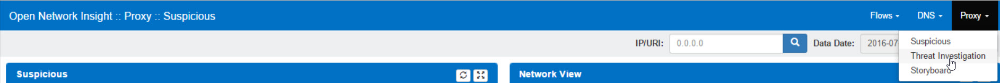Threat Investigation Web Page will be opened, loading the embedded IPython notebook. A list with all Proxy Records scored as High risk will be presented
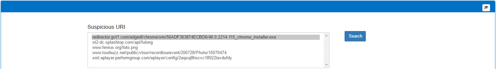Expanded Search
Select any value from the list and press the "Search" button. The system will execute a query to the proxy table, looking into the raw data initially collected to find additional activity for the selected Proxy Record. Results will be extracted and displayed in a table. If an expanded search was previously executed on this Proxy Record, the system will extract the results from the preexisting file to reduce the execution time by avoiding another query to the table. Query execution time is long and will vary depending on whether Hive or Impala is being used, so please monitor the notebooks status icon for completion. The quantity of results displayed on screen can be set by modifying the top_results variable, additional information on how to modify this variable can be found here
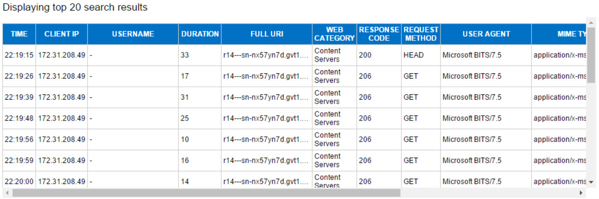Save comments.
In addition, a web form is displayed under the title of 'Threat summary', where the analyst can enter a Title & Description on the kind of attack/behavior described by the particular Proxy Record that is under investigation.
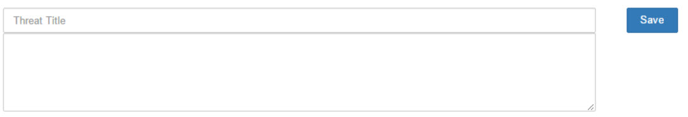Clicking the "Save" button, will create/update the threats.csv file, adding a new line with the contents of the form. This file is used at the Storyboard section to display all the comments entered by the user, as well it will serve as an index of the threats analyzed.
Continue to the Storyboard.
Once you have saved comments on any suspicious IP or domain, you can continue to the Storyboard to check the results.
Input files
- proxy_scores.tsv
Output files
- threats.csv
- es-{id}.csv
- incident-progression-{id}.json
- timeline-{id}.tsv
HDFS tables consumed:
proxy
Proxy Storyboard
-
Select the option Proxy > Storyboard from Apache Spot (incubating) Menu.
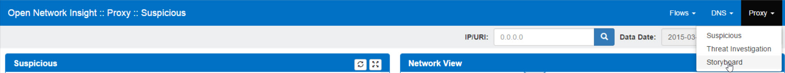 -
Your view should look something like this, depending on how many threats you have analyzed and commented on the Threat Analysis for that day. You can select a different date from the calendar.
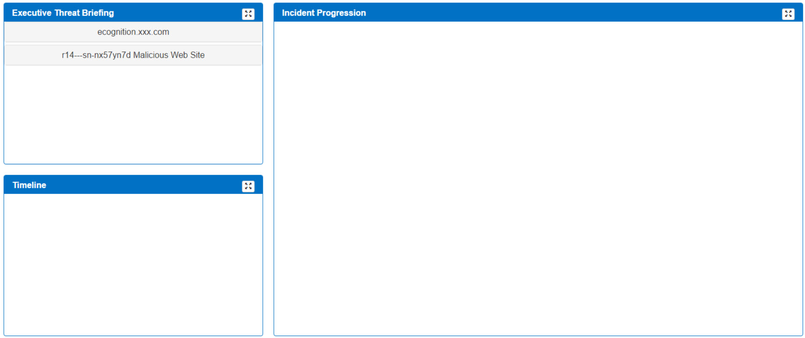
Executive Threat Briefing
Data source file: threats.csv
Executive Threat Briefing frame lists all the incident titles you entered at the Threat Investigation notebook. You can click on any title and view the additional comments at the bottom area of the panel.
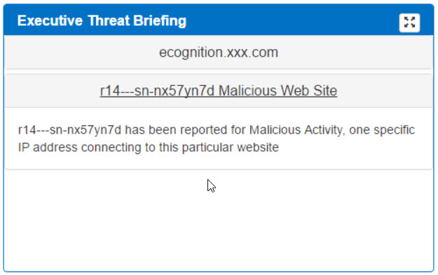
Incident progression
Data source file: incident-progression-{id}.json
Incident progression frame is located on the right side of the Web page. Incident Progression displays a tree graph (dendrogram) detailing the type of connections that conform the activity related to the threat. It presents the following fields:
- Referer - URLs that refers to the Suspicious Proxy Record
- IP - All ip addresses connecting to the Suspicious Proxy Record
- Method - Proxy methods used to communicate in between the IP addresses and the Proxy Record
- ContentType - HTTP MIME Types
- Threat - Represents the Suspicious Proxy Record
- Referred - URLs that the Suspicious Proxy Record referred to
- threats.csv
- incident-progression-{id}.json
- timeline-{id}.tsv
If multiple IP Addresses connects to a particular Proxy Threat (URL) you can scroll down/up, arrows indicate that there are more elements in the list.
Timeline
Data source file: timeline-{id}.tsv
Timeline is created using the connections found during the Threat Investigation process. It will display 'clusters' of IP connections to the Proxy Record (URL), grouped by time; showing an overall idea of the times during the day with the most activity. You can zoom in or out into the graphs timeline using your mouse scroll. The number next to the IP Address represents the quantity of connections made from that particular IP to the Proxy Record in the displayed time.
Input files